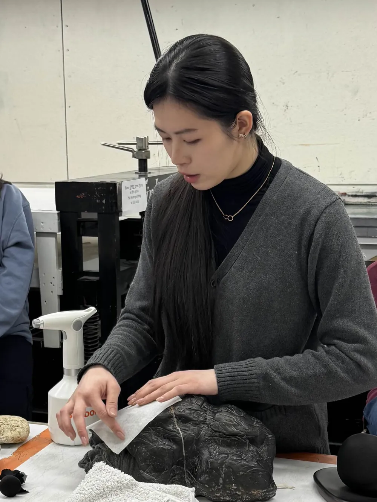

Artist bio艺术家简介About关于
Stone Artist. Printmaker石头艺术家 · 版画家

Yinghan Zhang is a printmaker whose work focuses on the cultural and philosophical meaning of scholars' stones—natural rocks shaped by time and admired for their unique forms. Drawing on traditional Chinese aesthetics and Daoist philosophy, Zhang explores the connection between nature, human perception, and art.张樱瀚是一位版画家,作品关注文人石的文化意涵与哲学意味——这些由时间塑造、因形态独特而被历代赏玩的天然奇石。创作植根于中国传统美学与道家思想,探索自然、人的感知与艺术之间的联系。
A key part of Zhang's practice is the ancient technique of full-shape rubbing, which they studied under a master artisan in Shandong. This method allows for a deep interaction with the texture of stone, capturing its qualities in a way that reflects both time and the meditative nature of stone appreciation. By combining rubbing with printmaking, woodcut, drawing, and collage, Zhang transforms stones into meditative landscapes, revealing their hidden essence.全形拓是这套创作实践的重要一环。这门古老的技艺,张樱瀚曾在山东师从一位传统匠人。它让人得以与石头的肌理深度对话,将石之质地如实留存——既映照时间,也呼应赏石时的静观之意。通过把拓印与版画、木刻、绘画和拼贴结合起来,张樱瀚把石头化作静观的山水,显露其隐藏的本质。
Zhang’s work invites viewers to reflect on themes of time, spirituality, and interconnectedness. Inspired by the Daoist idea that “a stone is the smallest mountain,” their art encourages a deeper exploration of even the smallest details, blending ancient traditions with modern techniques. Through their prints and mixed-media works, Zhang offers new perspectives on the world and human experience.张樱瀚的作品邀请观者思考时间、精神性与万物相连。受道家“石为最小之山”这一观念的启发,其艺术鼓励人们去深究最微小的细节,让古老的传统与当代的手法相互交融。通过版画与综合媒介作品,艺术家为我们打开看待世界与人类经验的新视角。
- Based in工作地
- Seattle, WA美国 · 西雅图
- Practice媒介
- Full-shape rubbing, printmaking, woodcut, drawing, collage全形拓、版画、木刻、绘画、拼贴
- Studied师承
- Full-shape rubbing, under a master artisan in Shandong山东,师从传统拓印匠人学习全形拓
- InstagramInstagram
- @mixiaoloartt ↗